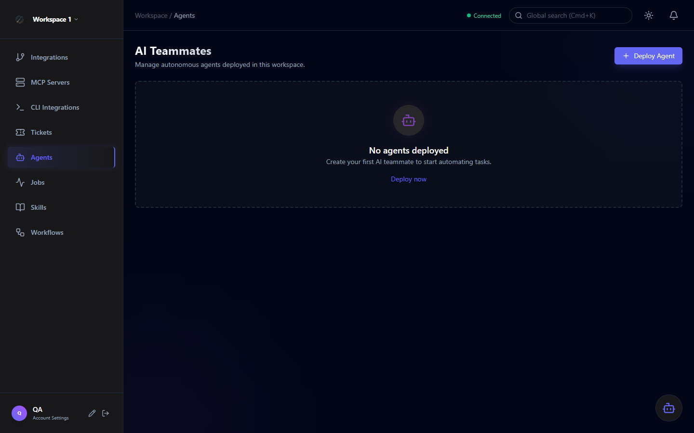

AI Agents
Orchestra AI agents are autonomous teammates deployed within a workspace. Each agent has a defined role, authorized tools, custom instructions, and optionally a model override. Agents execute tasks asynchronously via the background Worker service.

Built-in Agent Templates
Orchestra ships three production-ready templates to get you started immediately:
Automated PR/MR analysis via GitHub or GitLab. Operates in read-only mode — reviews diffs, comments on quality, style, and security issues.
- Read-only repository access
- PR diff analysis
- Automated comment generation
Deep codebase exploration and summarization. Uses read-only CLI access to traverse repositories and answer complex technical questions.
- Read-only CLI access
- Codebase exploration
- Technical summarization
End-to-end implementation with full read/write access. Handles feature development, bug fixes, and refactoring tasks from ticket to commit.
- Full read/write CLI access
- File creation and editing
- End-to-end implementation
Template versioning: Built-in agents track a TemplateVersion at creation time. When the template is updated in a new Orchestra release, you can re-deploy to get the latest instructions while keeping your existing tool authorizations.
Creating an Agent
Navigate to Agents in the workspace sidebar and click Deploy Agent. You'll be presented with two paths:
Browse the template catalogue. Templates come pre-configured with appropriate tools and instructions. Some fields are locked to preserve template integrity.
Define a custom agent with a name, role, capabilities, custom instructions, and manually select tool authorizations from the full tool library.
Agent form fields
| Field | Description |
|---|---|
| Name | Display name for the agent (e.g., "Senior Code Reviewer") |
| Role | Short role description used in system prompts (e.g., "Senior Software Engineer") |
| Capabilities | Comma-separated tag list (e.g., code-review, typescript). Used for filtering. |
| Custom Instructions | Free-form system instructions for the agent's behavior (mutually exclusive with Project Principles) |
| Project Principles | Code review-specific instructions — code standards, review focus areas (mutually exclusive with Custom Instructions) |
| Model Override | Optional: override the workspace default model for this specific agent |
Tool Authorization
Orchestra enforces granular tool authorization at the ToolAction level. Each tool (e.g., "GitHub Integration") contains multiple actions (e.g., "Create Issue", "List Pull Requests"). Agents only have access to the specific actions you authorize.
Built-in integrations: GitHub, Jira, GitLab. Actions are predefined and use reflection-based invocation in the backend.
Tools discovered from connected MCP servers. Appear alongside native tools in the tool picker with a distinct MCP badge.
Danger Level Classification
Every tool action carries a danger level to prevent unintended destructive operations:
Read-only operations — list, get, search. No side effects.
State-modifying but reversible — create issue, post comment, update status.
Irreversible operations — delete branch, force push, drop data.
Custom Instructions vs Project Principles
Mutually exclusive: An agent uses either Custom Instructions or Project Principles — never both. The correct field is automatically selected based on whether any code review tool actions are authorized.
| Field | Use When | Example Content |
|---|---|---|
| Custom Instructions | General-purpose agents (coding, search, triage) | Coding style preferences, technology constraints, response format requirements |
| Project Principles | Code review agents | SOLID enforcement, naming conventions, security rules, test coverage requirements |
Model Selection
By default, agents use the workspace's configured AI provider model. You can override this per-agent to use a different model for cost/quality trade-offs:
- Azure OpenAI: Select from deployed models in your Azure resource
- Ollama: Select from models discovered via
ollama list - GitHub Copilot: Configure reasoning effort level (low / medium / high) per CLI integration